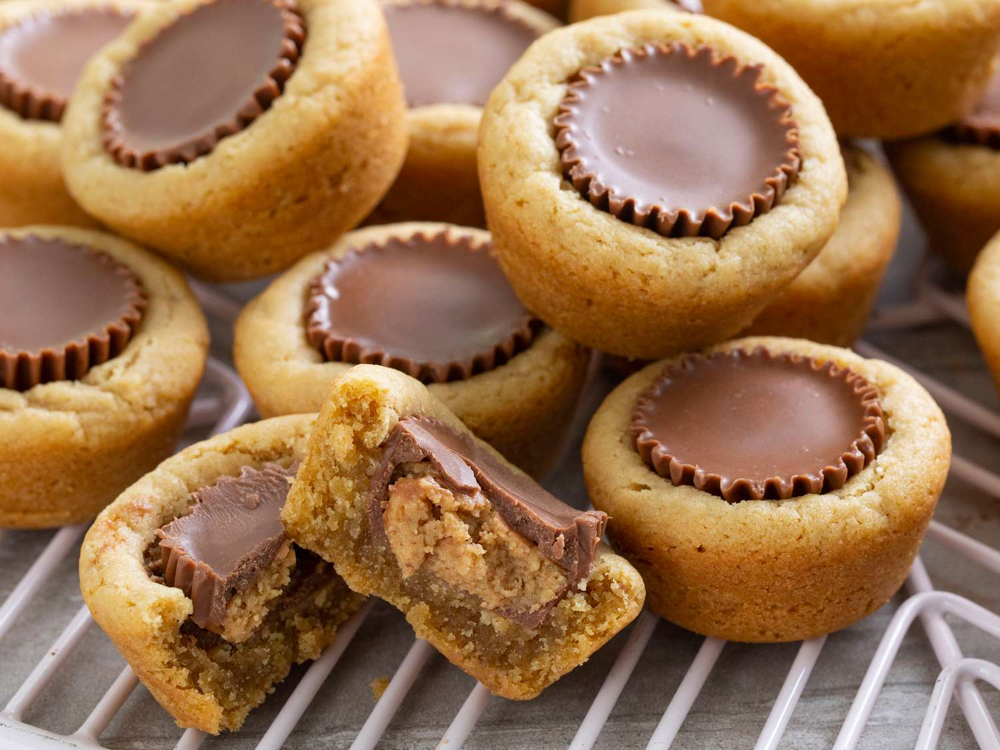

Reese's Cookie Cups

Description
When Reece's Peanut Butter Cups make a home in a moist peanut butter
what's not to love? To me, these cookies scream "The holiday's are coming!"
in the best way!
If you choose to let these cookies make an appearance on your next holiday spread,
beware! They are sure to disappear faster than you can say "Ho, ho, ho"!
Ingredients
- 1/2 Cup Margarine
- 1/2 Cup Peanut Butter
- 1/2 Cup Sugar
- 1/2 Cup Brown Sugar
- 1 Egg
- 1 teaspoon Vanilla
- 1 1/4 Cup Flour
- 3/4 teaspoon Baking Soda
- 1/2 teaspoon Salt
- 1 Package Reese's Peanut Butter Cups (unwrapped)
Steps
- Preheat oven to 375 degrees F
- In a stand mixer or using a bowl and hand mixer, cream together the margarine,
peanut butter, sugar, and brown sugar until fluffy and light in color (about 2 minutes).
Using a silicone spatula, scrape down the sides and bottom of the bowl.
- Mix in egg and vanilla until combined. Scrape down the sides and bottom of the bowl.
- In a separate bowl, wisk together flour, baking soda, and salt.
- With the mixer running on low, gradually add the dry ingredients until just combined. Scrape down the
sides and bottom of the bowl.
- Shape dough into 1 inch balls and place in an ungreased muffin tin.
- Bake for 8-10 minutes or until cookies are set.
- Immediately after removing from the oven, push an unwrapped peanut butter cup into the center of
each cookie until the top is leve with the cookie. Decorated melted chocolate with holiday sprinkles
if desired.